Mais variedade, menos repetição
Receitas diferentes pra cada momento do dia, pra sua família não enjoar da mesma comida de sempre.
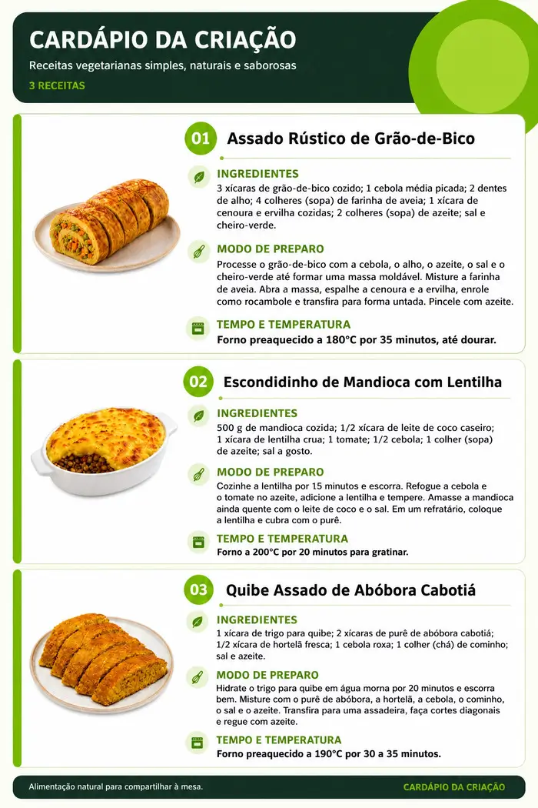
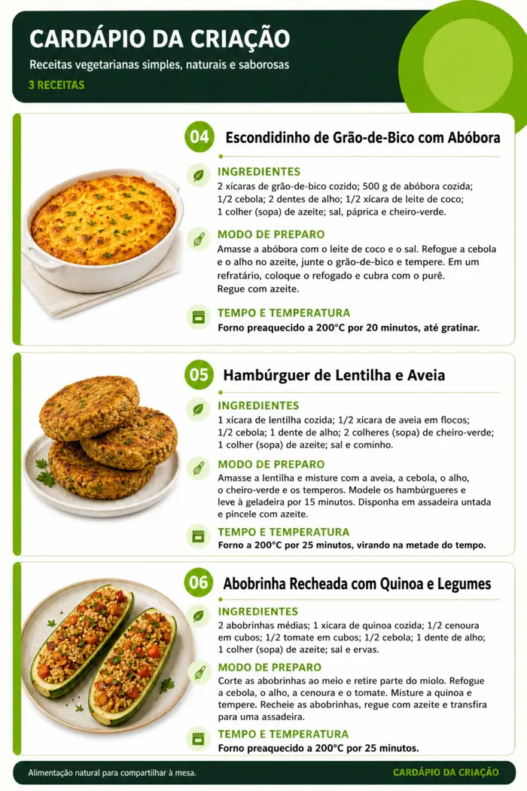
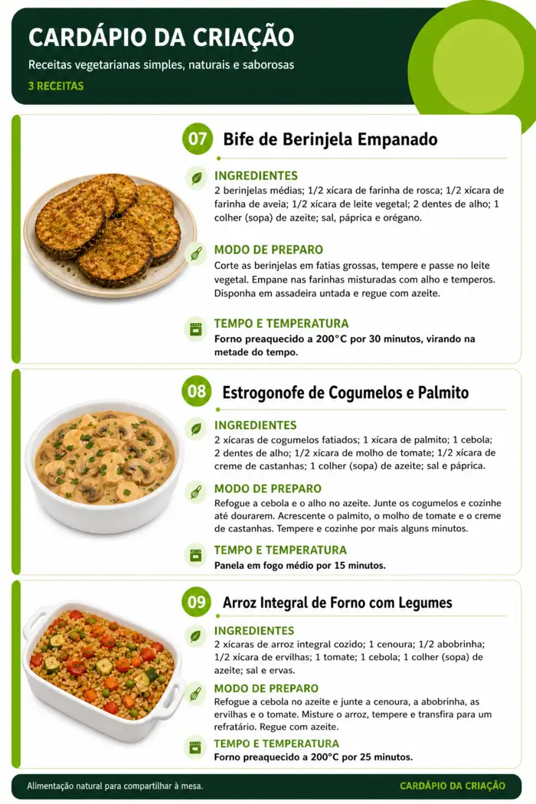
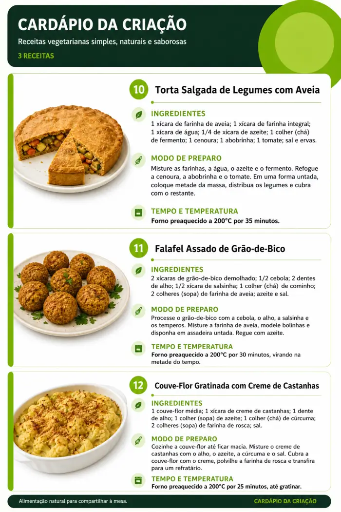
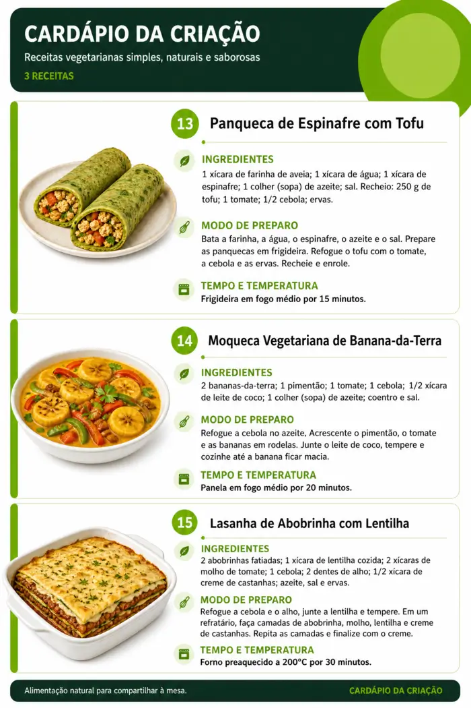
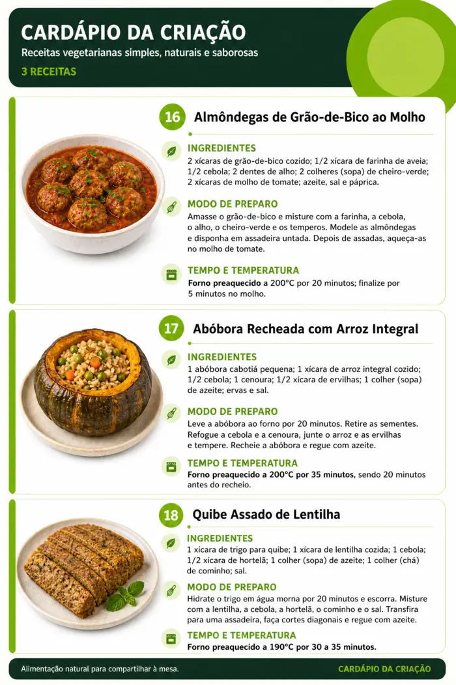
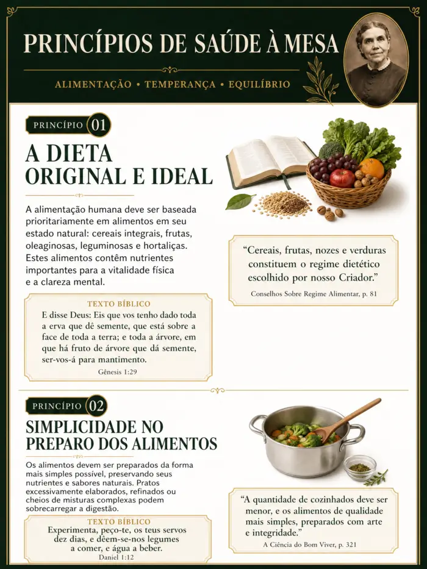
Aqui você abre o material e já sabe o que fazer: o que preparar e o que comprar
Cuidar da alimentação também é cuidar da fé. Se você já sentiu falta de receitas que unem as duas coisas, o Cardápio da Criação foi feito pra você.
Receitas diferentes pra cada momento do dia, pra sua família não enjoar da mesma comida de sempre.
Chegue na sexta sabendo o que vai servir, o que já pode preparar e o que ainda falta — sem virar a noite de sexta na cozinha.
Chega de pensar "receita → ingrediente → compra → próxima refeição" toda hora. Você só abre o cardápio e segue.
Menos tempo decidindo o que cozinhar, mais tempo sentada à mesa com quem você ama.
Quanto mais você adia, mais um Sábado chega com tudo em cima da hora. Começe agora e já sinta a diferença na próxima refeição.
NÃO PERDER MAIS TEMPOComida que agrada a família e ainda respeita os princípios de saúde e fé que você segue — sem abrir mão de nenhum dos dois
Abrir o cardápio, olhar o que está planejado e já saber o que fazer — sem gastar energia pensando nisso toda manhã.
Saber, já na sexta, o que vai servir, o que precisa comprar e o que pode deixar preparado antes do pôr do sol.
Ter opções diferentes pra cada refeição, sem precisar procurar receita nova toda semana.
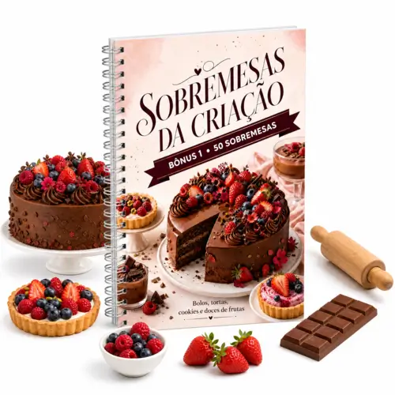
Um livro digital com 50 receitas de sobremesas vegetarianas: bolos, tortas, cookies, doces de frutas e opções especiais pra receber visita ou adoçar o Sábado.
Você tem sempre uma sobremesa pronta pra qualquer ocasião, sem precisar procurar receita de última hora.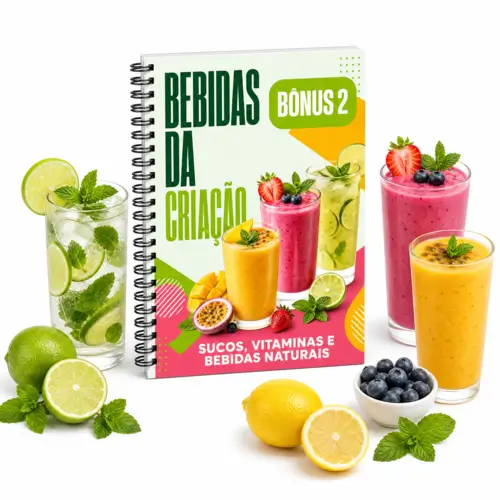
Combinações de sucos, vitaminas e bebidas naturais pra variar o café da manhã e outros momentos do dia.
Você deixa de repetir sempre a mesma bebida e ganha opções prontas pra cada momento da rotina.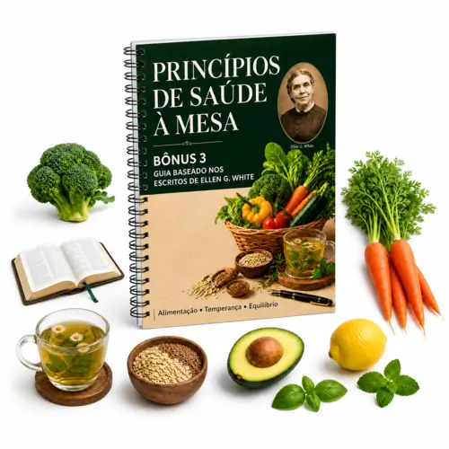
Um guia de consulta rápida com princípios sobre alimentação, temperança, hábitos e o equilíbrio entre saúde e estilo de vida.
Você aprofunda sua alimentação dentro dos princípios da sua fé, com uma referência fácil de consultar quando precisar.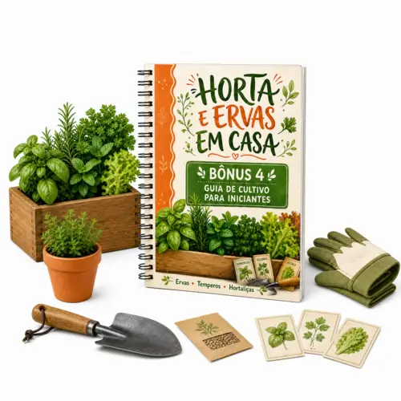
Um guia simples pra começar a cultivar ervas, temperos e hortaliças mesmo em espaços pequenos: vasos, iluminação, rega e colheita.
Você tem tempero fresco à mão, direto da sua casa, sem depender só do mercado.
Tenha acesso a 20 pregações maravilhosas sobre alimentação, com base Bíblica e no Espírito de Profecia de Ellen G. White, todas dentro dos princípios Adventistas do 7º Dia.
Você tem tempero fresco à mão, direto da sua casa, sem depender só do mercado.Ambas vêm com garantia de 7 dias
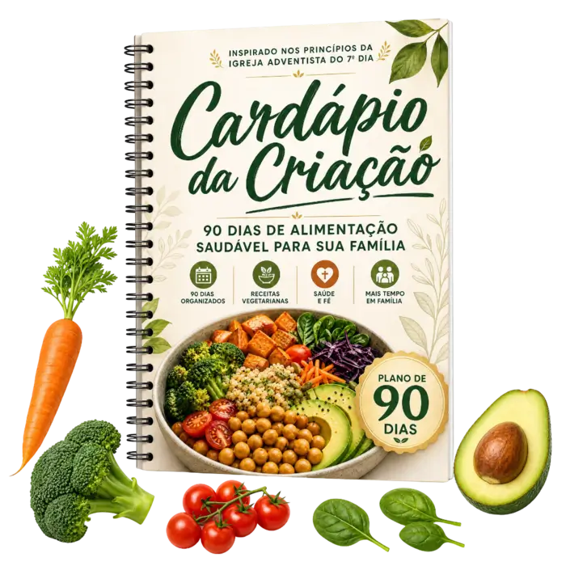
Cardápio da Criação: 90 dias de alimentação Saudável (180 Receitas)De R$ 179,00 por:
R$ 17,90
ou 3x de R$ 6,39 no cartão
✨ TODOS OS BÔNUS INCLUSOS
Todos Materiais (Recebimento Imediato)
Cardápio da Criação - CompletoDe R$ 279,00 por:
R$ 27,90
ou 6x de R$ 5,24 no cartão
APROVEITE AGORA: Você não vai encontrar esse preço depois!
Assim que o pagamento for confirmado, você recebe acesso imediato ao Cardápio da Criação, direto no seu e-mail, pra usar no celular ou imprimir.
Não. O material é ideal tanto pra quem já é vegetariana quanto pra quem está começando a caminhar nesse sentido, dentro do padrão adventista.
Sim. Todo o conteúdo foi pensado especialmente pra famílias adventistas, respeitando os princípios de alimentação e saúde da sua fé.
Você tem 7 dias de garantia incondicional. Se por qualquer motivo não for pra você, é só solicitar o reembolso e devolvemos 100% do valor.
Você pode pagar via Pix, cartão de crédito ou boleto, com liberação de acesso automática após a confirmação.
Funciona pra casa inteira. O planejamento foi feito pensando em quem cozinha pra mais de uma pessoa, não só pra uma refeição individual.
Sim. O material foi estruturado justamente pra isso: você não precisa decidir nada do zero, só seguir o que já está planejado, dia após dia.
Sim, esse é um dos focos centrais. Você tem um guia específico de preparo antecipado, pra chegar ao Sábado com a alimentação já resolvida.
O acesso é vitalício. Depois de comprado, o material é seu, sem prazo de expiração.
Você pode entrar em contato com nosso suporte, que vai te ajudar com qualquer dificuldade de acesso ou uso do material.